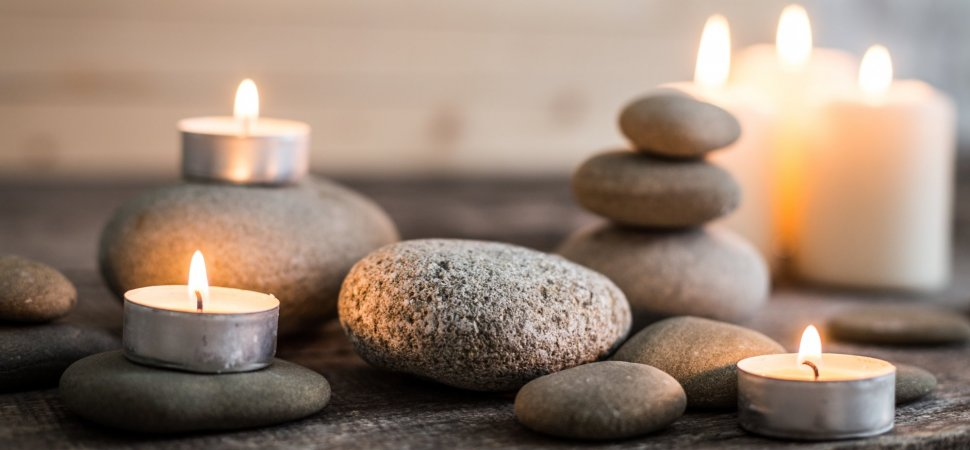

Have A Time Of Your Day To Try Some Of These Relaxing Techiques
The Weather Got The Best Of You? Don't Worry, Here Are Some Cool Indoor Activities To Keep You Occupied
Whether It's Sunny Or Rainy, You Can Still Enjoy Your Time
It's important to take care of yourself physically, mentally, emotionally, and spirtually everyday in order to feel good about yourself. Self-Care will help reduce stress, keep you healthy, resilient and gain self confidence.